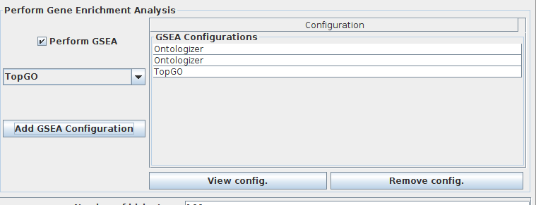

Graphical Interface Layout
The graphical interface of JbiclustGE is divided in three main areas as shown in figure 1:
A) Is the menu that give access to all the functionalities present in this application.
B) Is the clipboard, that stores the results (as a tree structure) of the operations that are exectuted along the analysis. The root of this tree represents a project. Must be highlighted that a project is regarding to only one gene expression dataset. Thus, for each gene expression dataset to be analysed, users must have to create a new project.
C) Is the area where the results (concerning to the objects present in clipboard) are shown to the user.
Create New Project
-
Press over "New Project"

-
In panel as presented in figure 2, there are two options:
- "Load Example Dataset", will open other panel with several examples of gene expression datasets (see next topic Example gene expression dataset).
- "Open Gene Expression Dataset File", to load a given gene expression dataset.
Then, choose a name to your project. If your gene expression dataset has missing values, a warning will be shown in red saying that missing values were found. Then, you can choose a missing value imputation method, otherwise a green message will appear showing that data do not hava missing values. Add any note if you want and press "OK".
Figure 2: Panel to create a new project
-
Your new project is presented in a structure as shown in figure 3.
Figure 3: Project created
Example gene expression dataset
Several examples of gene expression datasets can be used by users to assess the features provided in JBiclustGE. Each example has its own description regarding the organism, authors, the manuscript associated to gene expression datatset and other additional information.
Figure 4: Loading example dataset
- By pressing "Open location", will open the folder where these datasets are stored.
- By pressing "Open with default text editor", the chosen dataset will be opened in default text editor of your operating system.
These example datasets are available in the following zip file: Download
Run a Biclustering method
-
Open "Run --> Biclustering method"
-
Configure the chosen biclustering method (The figure below is an example)
 Example: Fabia configuration panel
Example: Fabia configuration panel -
(Optional) select "Perform GSEA" if you want to execute Gene Set Enrichment Analysis (GSEA) in runtime (after executing the biclustering method), and press "Add GSEA configuration" to add/configure the GSEA Engine.

-
Press "Ok" to execute.
Biclustering results
After the execution of the biclustering algorithm, the results will be added to clipboard. Press on the respective object to visualize these results.
Bicluster results panel
The list of biclusters obtained by a biclustering method is presented in the left side of the panel (as shown in figure bellow). In order to check the content of each bicluster, users must click on the corresponding bicluster. Moreover, that list of results can be exported/saved to files, or users can visualize the parallel coordinates or the heatmap of each one of the biclusters. Note: Parallel coordinates and heatmaps produced by "ShinyHeatmaply" are displayed in your browser, you have to "close viewer" after the visualization, in order to shutdown the R process in background, avoiding the consuming of unnecessary computing resources.
### Search features
Users can search if a certain gene or condition was integrated in the biclusters obtained. If a gene/ condition is found, are displayed all the biclusters where that gene/ condition was detected.
Gene and Condition frequencies can be also analysed.

Bicluster analysis
Several measurements can be performed on the biclusters obtained, as presented in figure below.

Run Gene Set Enrichment Analysis (GSEA)
- Open "Analyis --> Enrichment Analysis"
-
Choose the GSEA engine: Ontologizer or topGO.

GSEA engines
Ontologizer
- Select a project and the respective list of the biclustering results.
- Define the "Ontology File", provide an Url of a file available online or choose a file stored in your computer.
- Define the "Annotation File", choose the annotation of an organism (annotations of the Gene Ontology Consortium) or use a file stored in your computer.
- Select the settings to be used in ontologizer (e.g: Gene ontology aspect, calculation method, etc...)
- Press "Ok" to execute.
Users can also save or load the configurations to/from a file.
topGO
In topGO you can use annotation packages that are available in Cran or Bioconductor websites, for that you must provide the name of that package. If it is an ”org.XX.XX” annotation package you must define which is the type of gene identifiers that map to GO terms ("Mapping type" --> Entrez, GenBank, Alias, Ensembl, Gene, Symbol, GeneName or UniGene. Read carefully the instructions of the respective package to choose correctly the "mapping type", or errors can occur during the analysis process).
Other strategy is to use a "Custom" annotation (please read topGO manual to learn how to build a custom annotation file).
- Select a project and the respective list of the biclustering results.
- Choose the strategy to provide the annotation of the organism analysed ("Use Annotation Database" or "Use a File With Annotation").
- Select the settings to be used in topGO (e.g: ontology aspect, Algorithm, etc...)
-
Press "Ok" to execute.
GSEA Results
To view the results of the Gene Set Enrichment Analysis, the user have to press over the pretended GSEA object, displayed in clipboard (as presented in the next figure).
Thus, user can visualize the GSEA results calculated for each one of the biclusters. For that just press on the desired bicluster, and the results are displayed in the middle table, and the associated genes are presented in the table on the right. The p-value can be changed (only with values lower that were used in the analysis) which leads to an update of these tables.
The frequencies of GO Terms can be analysed, for that, just press on "Show GO Terms Frequency".

Users can also visualize the percentage of enriched biclusters for a range of p-values, selected by them, or use the default p-values (5%, 1%, 0.1%, 0.01%, 0,001% and 0.0001%)